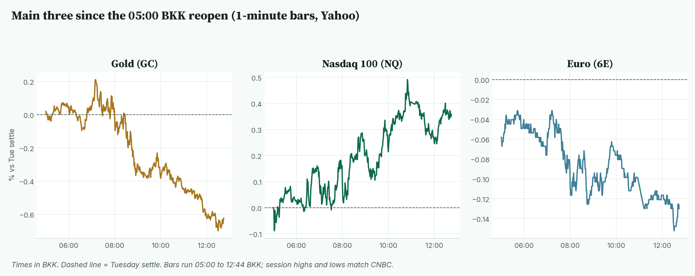
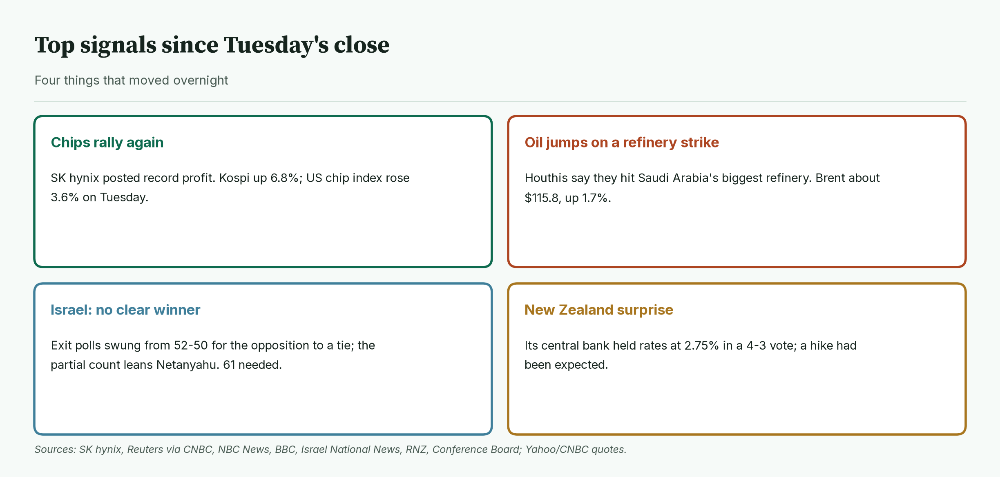
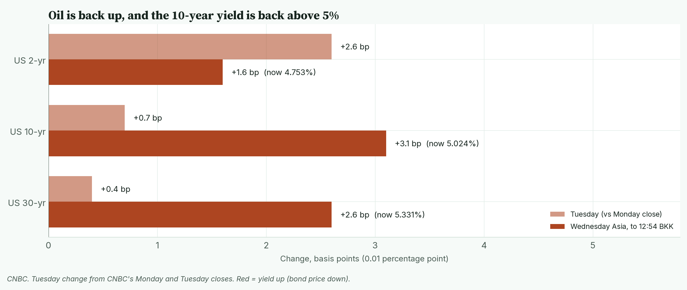
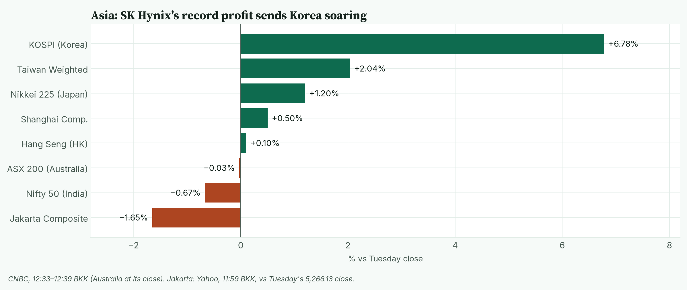
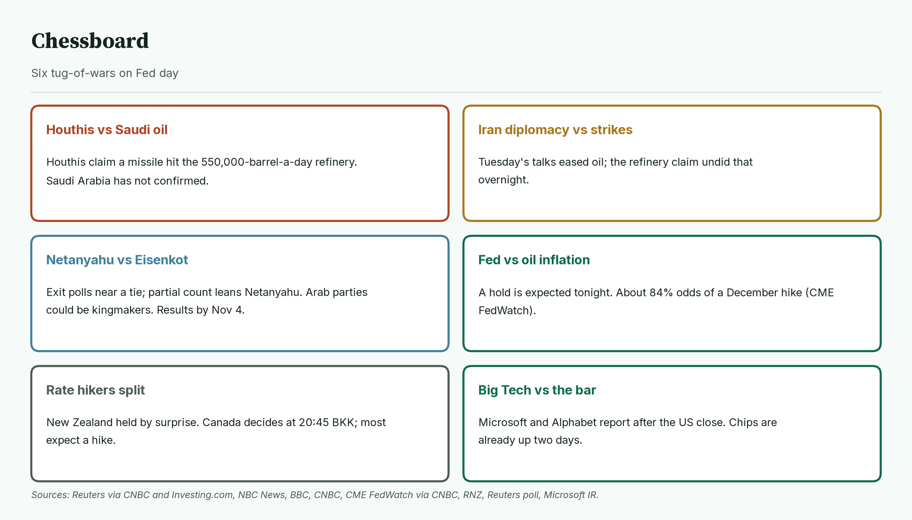
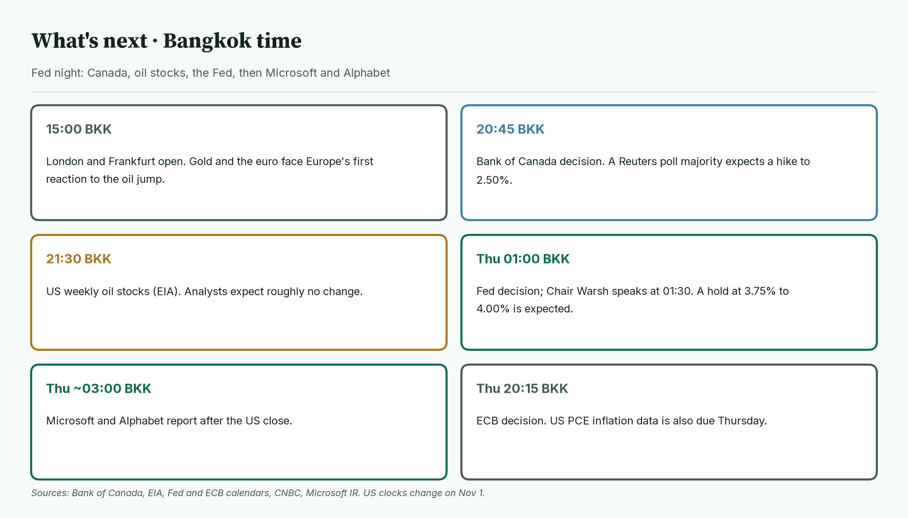
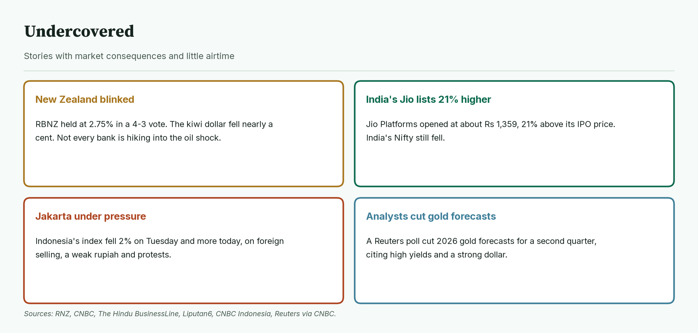
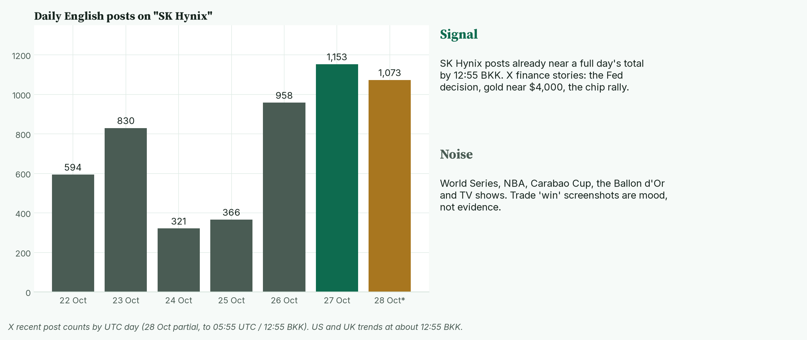

April · Market Intel, pre-London · Wed Oct 28, 2026 · ~13:00 BKK / ~06:00 London
Headline: SK hynix's record profit sent Korea's Kospi up 6.8%, and Nasdaq futures are up 0.36%. But a claimed Houthi strike on Saudi Arabia's biggest refinery pushed oil up about 1.7%. That knocked gold down 0.63% to 4,049.1, and the euro is down 0.13%.
The 10-year US yield is back above 5%. So what: the Fed decides at 01:00 BKK Thursday. Microsoft and Alphabet report after the US close, about two hours later.
1) Main instruments The three main contracts since the 05:00 BKK reopen, as a % move from Tuesday's settle. Gold peaked at 07:10 BKK and slid all morning; Nasdaq climbed steadily. |
(Futures are contracts that trade nearly around the clock, so they show the mood before stock markets open. Quotes are from the Yahoo Finance futures feed at 12:44 BKK (05:44 UTC), about 10 minutes delayed, and match CNBC. Ranges use 1-minute bars from the 05:00 BKK reopen; today's bars start at 05:00. Session highs and lows match CNBC.)
- Gold futures (GC, Dec): 4,049.1, −0.63%, at 12:44 BKK. Driver: dearer oil raises inflation fears, so the Fed may keep rates high for longer (CNBC/Reuters, citing ANZ). Gold pays no interest, so high rates make it less attractive.
- Tuesday's settle was 4,074.6, after gold gained about 1% on Tuesday (CNBC).
- Today's range is 4,045.4 (12:30 BKK) to 4,084.1 (07:10 BKK). Spot gold is 4,033.95, −0.59% (CNBC, 12:54 BKK).
- Nasdaq 100 futures (NQ, Dec): 29,919.00, +0.36%, at 12:44 BKK. Driver: the chip rally carried on after SK hynix's record quarter (CNBC, AP). The settle was 29,812.00. The low was 29,783.75 (05:02 BKK); the high was 29,963.50 (10:50 BKK).
- Euro futures (6E, Dec): 1.1142, −0.13%, at 12:44 BKK. Driver: the dollar is a little firmer as oil rises. Europe imports most of its energy, so dearer oil hurts the euro. That link is my read, not a reported driver. The settle was 1.1157 (CNBC; Yahoo 1.11565). Today's range is 1.11395 (12:29 BKK) to 1.11540 (07:12 BKK). Spot euro is 1.1118, −0.04% (CNBC, 12:54 BKK).
- Takeaway: oil is the swing factor. It is lifting yields and pressing gold and the euro, while chips lift Nasdaq. Gold and the euro both hit their session lows around 12:30 BKK.
Context. The dollar index (DXY, the dollar against six major currencies) is 102.43, +0.11% (CNBC, 12:54 BKK). The 10-year US yield (what the US government pays to borrow for 10 years) is 5.024%, up 3.1 basis points (CNBC, 12:54 BKK; a basis point is 0.01 percentage point). The VIX (the "fear gauge" built from S&P 500 option prices) closed Tuesday at 17.52, −4.73% (Cboe via CNBC). US oil (CL, December) is 101.50, +1.60% (12:44 BKK). Brent (December) is 115.84, +1.72% (CNBC, 12:44 BKK). S&P 500 futures (ES) are 7,760.50, +0.03% (12:44 BKK). Bitcoin is $80,802, +0.23% (CNBC, 12:54 BKK).
2) Top signals Four overnight changes. Chips rallied again, oil jumped, Israel's vote is too close to call, and New Zealand surprised. |
- SK hynix had a record quarter. Operating profit was 83.3 trillion won, up 632% on a year. (High: SK hynix, Yonhap)
- Oil jumped. The Houthis say a missile hit Saudi Arabia's biggest refinery. Saudi Arabia has not confirmed it. (High that the claim was made: Reuters via CNBC)
- Israel's vote is too close to call. First exit polls gave Eisenkot's bloc 52 seats to Netanyahu's 50. Updated polls show a 51-51 tie (Kan, Channel 13) or Netanyahu slightly ahead (Channel 12). With about 55% of votes counted, partial official results give Netanyahu's bloc 56 seats, the opposition 49 and Arab parties 15; those can still shift. A majority needs 61. (High: NBC News, BBC; Central Elections Committee via Israel National News)
- New Zealand held rates at 2.75%, in a 4-3 vote. Markets had expected a hike. (High: RNZ)
- Takeaway: the AI trade is still running, but oil is fighting it through higher yields.
3) Rates, FX and oil Yields edged up on Tuesday and are rising faster in Asia as oil climbs. The 10-year is back above 5%. |
- Tuesday's US yield closes: 2-year 4.737%, 10-year 4.993%, 30-year 5.305% (CNBC).
- Now: 2-year 4.753%, 10-year 5.024%, 30-year 5.331% (CNBC, 12:54 BKK).
- Mentor: bond prices fall when yields rise. Dearer oil means more inflation worry, so investors want more interest.
- Fed. A hold at 3.75% to 4.00% is widely expected tonight (CNBC). CME FedWatch shows about an 84% chance of a December hike (CNBC/Reuters).
- FX. The yen is at 157.80 per dollar (CNBC, 12:54 BKK). The New Zealand dollar fell nearly a cent after its central bank's surprise hold, to just under 56 US cents (RNZ).
- Oil. Brent's range today is 114.11 to 116.06; WTI's is 99.75 to 101.62 (CNBC). Oil fell nearly $2 on Tuesday on hopes from Middle East talks, then reversed overnight (Reuters via CNBC).
- Takeaway: 5% on the 10-year is the line to watch. Staying above it makes life harder for gold and for richly valued tech stocks.
4) Why it matters Asia at about 12:33–12:39 BKK (Jakarta at its 11:59 BKK break). Chip-heavy Korea and Taiwan lead; India and Indonesia fall. |
Tuesday's US rally was led by chips, and SK hynix's results added fuel in Asia.
- The S&P 500 rose 0.60% to 7,722.60. The Nasdaq Composite rose 1.18% to 26,477.81, its best day since Oct 2. The Dow rose 0.03% to 52,377.57. (CNBC, MarketWatch)
- The Philadelphia chip index rose 3.60% to 11,482.51 (CNBC).
- US consumer confidence jumped to 91.7, against about 81 expected, as petrol prices eased (Conference Board, Reuters).
- Durable goods orders (orders for long-lasting goods such as machines and planes) rose by $6.3 billion to $345.4 billion (Dow Jones). That is a 1.8% rise (Census Bureau).
- Boeing fell about 10% after it said it will miss its 2026 target for 737 deliveries (CNBC, MarketWatch).
- After the close, Visa fell about 2%, NXP about 9%, and Robinhood almost 5% (CNBC).
- Korea's Kospi is up 6.78% at 6,020.48 (CNBC, 12:34 BKK). Japan's Nikkei is up 1.20% and Taiwan 2.04% (CNBC).
- Mentor: SK hynix makes the memory chips used in AI servers. A record profit there suggests AI spending is still growing.
- Takeaway: chip earnings keep beating, but NXP's drop shows the bar is high. Tonight, Microsoft and Alphabet need to beat clearly.
5) Chessboard Six tug-of-wars on Fed day. The Saudi refinery claim and the Fed can move gold fastest. |
- Houthis vs Saudi oil. The Houthis claim a missile hit Ras Tanura, Saudi Arabia's biggest refinery (550,000 barrels a day). Saudi Arabia has not confirmed the strike; Bloomberg says a fire near the terminal was contained. (Reuters via CNBC and Investing.com)
- Iran diplomacy vs strikes. Tuesday's talks pushed oil down. The refinery claim reversed that overnight. (Reuters via CNBC)
- Netanyahu vs Eisenkot. First exit polls had 52 for Eisenkot's bloc against 50; updated polls are tied or lean Netanyahu, and the partial count favours him. Arab parties are projected at 17 to 19 and could decide who governs. Official results are due by Nov 4. (NBC News, BBC, CNBC)
- Fed vs oil inflation. A hold is expected; the fight is over December. (CME FedWatch via CNBC)
- The rate hikers are split. New Zealand held. Canada decides at 20:45 BKK; 19 of 34 economists in a Reuters poll expect a hike to 2.50%.
- Big Tech vs the bar. Microsoft and Alphabet report after the US close (Microsoft IR, CNBC).
- Takeaway: oil is the overnight wild card. Confirmation of refinery damage would hit gold and the euro further through higher yields.
6) Leading indicators (BKK times) A packed night. Canada, US oil stocks, the Fed, then Microsoft and Alphabet. The ECB follows on Thursday evening BKK. |
- 15:00: London and Frankfurt open.
- 20:45: Bank of Canada decision. Most economists expect a hike (Reuters poll).
- 21:30: US weekly oil stocks (EIA). A Reuters poll expects a rise of about 15,000 barrels, roughly no change.
- Thursday 01:00: Fed decision. Chair Warsh speaks at 01:30.
- Thursday, after 03:00: Microsoft and Alphabet results.
- Thursday 20:15: ECB decision. US PCE inflation data (the Fed's preferred price gauge) is also due Thursday (CNBC).
- Levels to watch: GC 4,045.4 and 4,084.1. NQ 29,783.75 and 29,963.50. 6E 1.11395 and 1.11540. 10-year 5.00%. Brent 116.06.
- Takeaway: the deciders are the Fed at 01:00 BKK and Warsh's tone at 01:30 BKK, then Microsoft and Alphabet.
7) Undercovered Four stories with little airtime. They touch the global rate cycle, emerging markets and gold's outlook. |
- New Zealand broke ranks. Governor Anna Breman, Carl Hansen, Rebecca Williams and Prasanna Gai voted to hold; Hayley Gourley, Paul Conway and Karen Silk voted to hike. The bank says tighter policy is still likely, which keeps a December hike in play. (High: RBNZ, RNZ)
- India's Jio listed 21% higher. Jio Platforms opened at about Rs 1,359, 21.36% above its IPO price (High: The Hindu BusinessLine, India Today). India's Nifty is still down 0.67% (CNBC).
- Jakarta keeps falling. Indonesia's index fell 1.99% on Tuesday (Yahoo). It is down about 1.65% more this morning (Yahoo, 11:59 BKK). Brokers cite foreign selling, a weak rupiah and student protests. (Medium: Liputan6, CNBC Indonesia)
- Analysts cut their gold forecasts. A Reuters poll cut 2026 gold forecasts for a second straight quarter. It cited high yields and a strong dollar, but expects a recovery in 2027. (High: Reuters via CNBC)
8) What's trending on X (~12:55 BKK) Daily English original posts (no reposts) mentioning "SK Hynix", plus today's trends sorted into signal and noise. Today's partial count (1,073) is already close to Tuesday's full day (1,153). |
- US: Blazers, #WorldSeries, Rays, Brewers, Ja Morant, #dwts.
- UK: Harry Kane, #BallonDor, Arteta, #CarabaoCup, Brazil, Lula.
- Signal: no market topic is in the top US or UK trends. X finance stories focus on the Fed decision, gold near $4,000 and the chip rally. (Medium: X news summaries)
- Data point: original posts (excluding reposts) on "SK Hynix" reached 1,073 by 12:55 BKK, against 1,153 for all of Tuesday (X post counts).
- Mood, not evidence: traders are posting screenshots of winning gold trades from Tuesday's bounce.
- Noise: the World Series, the NBA, the Carabao Cup, the Ballon d'Or and TV shows.
Bottom line
Chips are winning the morning, but oil and a 5% 10-year yield are the bigger risk going into the Fed. For Jim: gold is near today's low of 4,045.4. Breaking it opens Tuesday's bounce zone near 4,000; 4,084.1 is the level that would turn it positive. Nasdaq is near its high of 29,963.50; 30,000 is the round number in sight before Microsoft and Alphabet. The euro is at the bottom of a tight 1.11395 to 1.11540 band. Warsh's tone at 01:30 BKK is the likeliest trigger for a break. Interpretive note: on Fed days, markets often stay quiet until the decision. A confirmed refinery hit could break that earlier. That is a read, not a forecast.
Confidence: Futures levels: high for direction, medium-high for the exact tick (Yahoo feed, about 10 minutes delayed; settles and session ranges match CNBC). US closes and yields: high (CNBC). Brent: CNBC December contract. Refinery strike: claimed by the Houthis, not confirmed by Saudi Arabia. Fed odds: medium-high (CME FedWatch via CNBC). Euro driver: my read. Durable goods: Census Bureau. Israel: exit polls and a partial count, not official results. Jakarta: Yahoo, quote from the 11:59 BKK lunch break. X news summaries: medium.
Charts: /workspace/april-charts/2026-10-28/pre-london-{scoreboard,main3,signals,rates,asia,chess,leading,under,xsplit}.png |